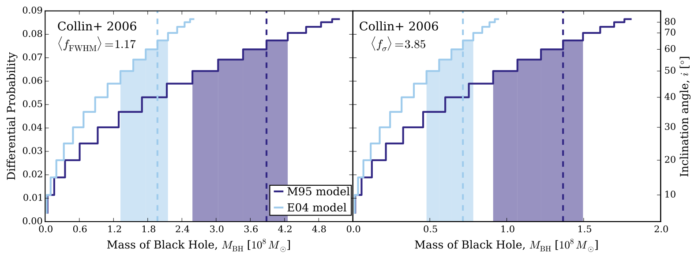
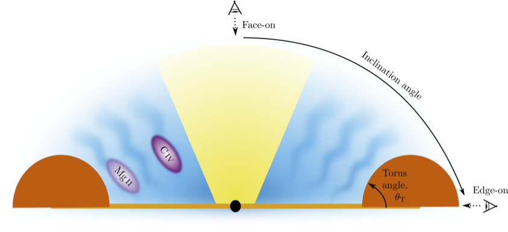
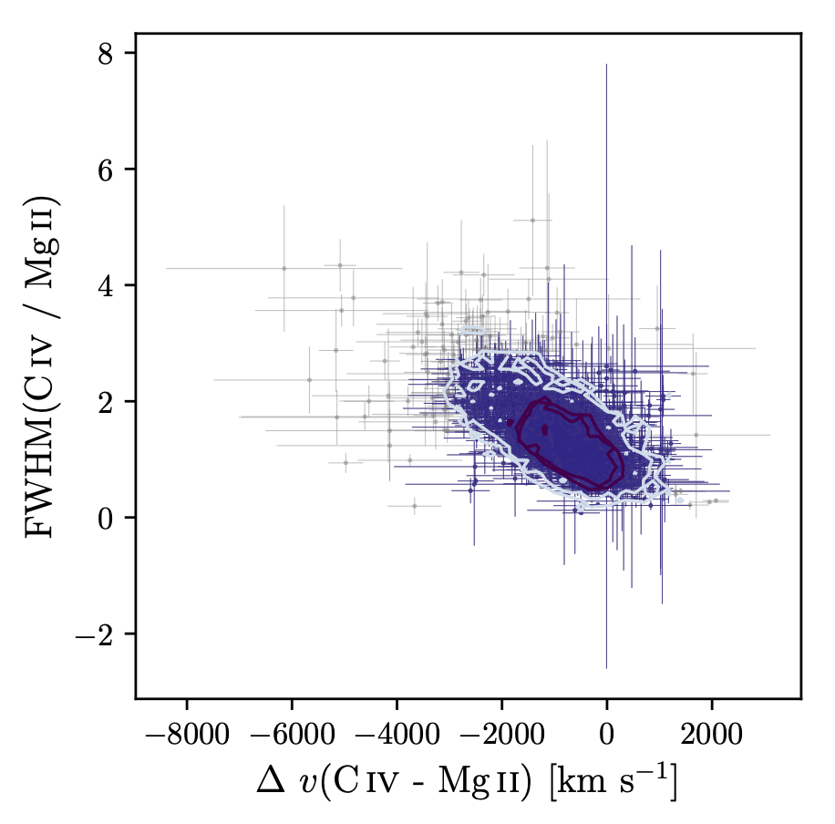
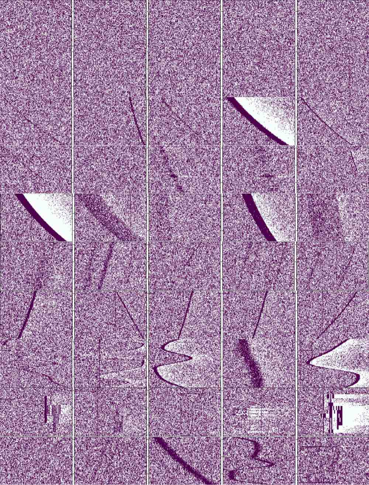
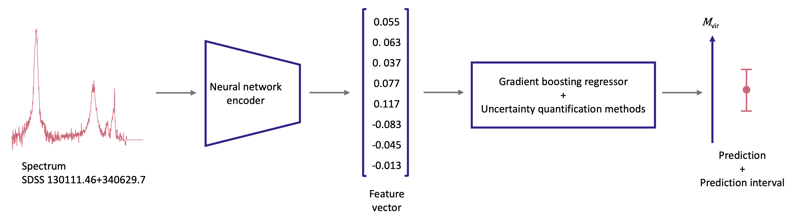
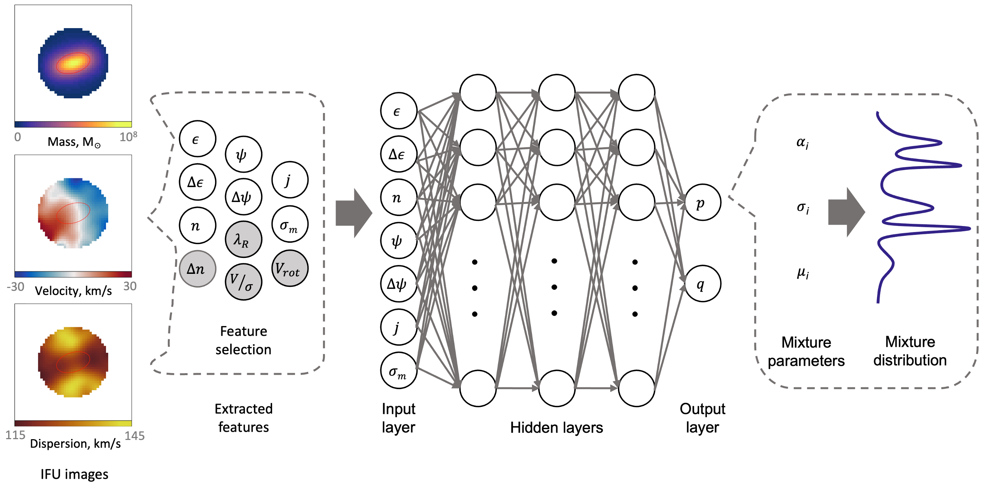

[ arXiv | DOI ]
Black hole (BH) masses calibration at high redshifts often depends on secondary mass estimators. The estimated virial mass BH is linked with the true BH mass by the virial scale factor, f. A dynamical disk-wind broad line region (BLR) model of active galactic nuclei is built to recover f. Several factors affect the f values, including the BLR geometry, location of emission region, and inclination angle. Different line width characterisation might also induce bias in the estimation.
Keywords: black hole; broad line region; disk-wind; quasar
"
alt="" style="width:420px;height:250px;" />
Virial Black Hole Mass Estimation

Quasar Broad Emission Line Region with Disk-wind Model
[ arXiv | DOI ]
The observed spectral properties of broad absorption line quasars (BALQs) provides a key to understand quasar unification paradigms. Statistical methods and supervised machine learning classification are employed to learn whether it is possible to separate BALQs and non-BALQs given the continuum and emission line properties. The distributions of the BALQ and non-BALQ properties are similar. None of the observed features are able to differentiate the two samples. Most published narrow disk-wind models are inconsistent with these observations. An alternative disk-wind model is proposed: a wide wind opening angle with multiple radial streams of dense clumps.
Keywords: broad line region; disk-wind; machine learning; quasar; quasar orientation
"
alt="" style="width:420px;height:250px;" />
Broad Absorption Line Quasars with Statistics and Machine Learning
[ arXiv | DOI ]
A unified model of active galactic nuclei based on orientation predicts that the diverse subclasses can be explained by the different viewing angles of the observer. Though several orientation indicators have been suggested, a widely applicable measure has yet to be found. Using two easily measured properties of the emission line in the ultraviolet-optical, the correlation between the velocity shifts and line widths is shown to be due to orientation.
Keywords: broad line region; disk-wind; quasar; quasar orientation
"
alt="" style="width:420px;height:250px;" />
Quasar Orientation Indicator
</a> and <br> <a href='https://www.swinburne.edu.au/research/centres-groups-clinics/centre-for-astrophysics-supercomputing/' target='_blank'>Centre for Astrophysics & Supercomputing Swinburne University of Technology</a></p>
<p>
The project aims to extract spectral features of the retina from hyperspectral retinal images with machine learning and deep learning methods. Using an autoencoder model to extract the encodings in the 2D latent space, the model is able to segment the features of the retina well. One of the results is shown in the figure with ground truth labels overlaid as points. The approach is performed in an unsupervised (trained without labelled data) manner, which is promising as labelled data can be expensive and scarce. It has the potential for detection of anomalies, enabling early diagnosis of eye diseases, such as Alzheimer's disease and glaucoma, at a stage when treatment may be most effective.
</p>
<p class='keywordtext'>Keywords: anomaly detection; biomedical; machine learning</p>")
Biomedical Imaging Analysis with Astrophysics
[ arXiv | DOI | Data ]
New classes of astronomical objects are often discovered serendipitously. We present the Single-dish PARKES data challenge for finding the uneXpected (SPARKESX), a compilation of real and simulated high-time resolution observations of the Parkes Murriyang radio telescope. The goal of this challenge is to aid in the development of new algorithms that can detect a wide-range of source types.
Keywords: anomaly detection; extraterrestrial intelligence; transient
"
alt="" style="width:420px;height:250px;" />
SPARKESX - A data challenge
[ arXiv | DOI | GitHub ]
A direct measure of the black hole mass is often restricted to nearest galaxies and instead, an indirect method using the single-epoch virial black hole mass estimation is used for objects at high redshifts. However, this method is subjected to biases and uncertainties as it is reliant on the scaling relation from a small sample of local active galactic nuclei. We propose the application of conformalised quantile regression (CQR) to quantify the uncertainties of the black hole predictions in a machine learning setting. In contrast to baseline approaches for prediction interval estimation, we show that the CQR method provides prediction intervals that adjust to the black hole mass and its related properties.
Keywords: black hole; machine learning; quasar; uncertainty quantification
"
alt="" style="width:420px;height:250px;" />
Uncertainty Quantification of Black Hole Mass
[ arXiv | DOI | Overview ]
Since the turn of the century, astronomers have been exploiting the rich information afforded by combining stellar kinematic maps and imaging in an attempt to recover the intrinsic, three-dimensional (3D) shape of a galaxy. In this work, we aim to recover the 3D shape of individual galaxies using their projected stellar kinematic and flux distributions using a supervised machine learning approach with mixture density network (MDN). Compared to previous methods, we demonstrate potential improvements achieved with the MDN model to retrieve the 3D galaxy shape along with the uncertainties, especially for prolate and triaxial systems.
Keywords: galaxy; machine learning
"
alt="" style="width:420px;height:250px;" />
Galaxy 3D Shape using Deep Learning
{kind=link}
{kind=link}
{kind=link}
{kind=link}
{kind=link}
{kind=link}